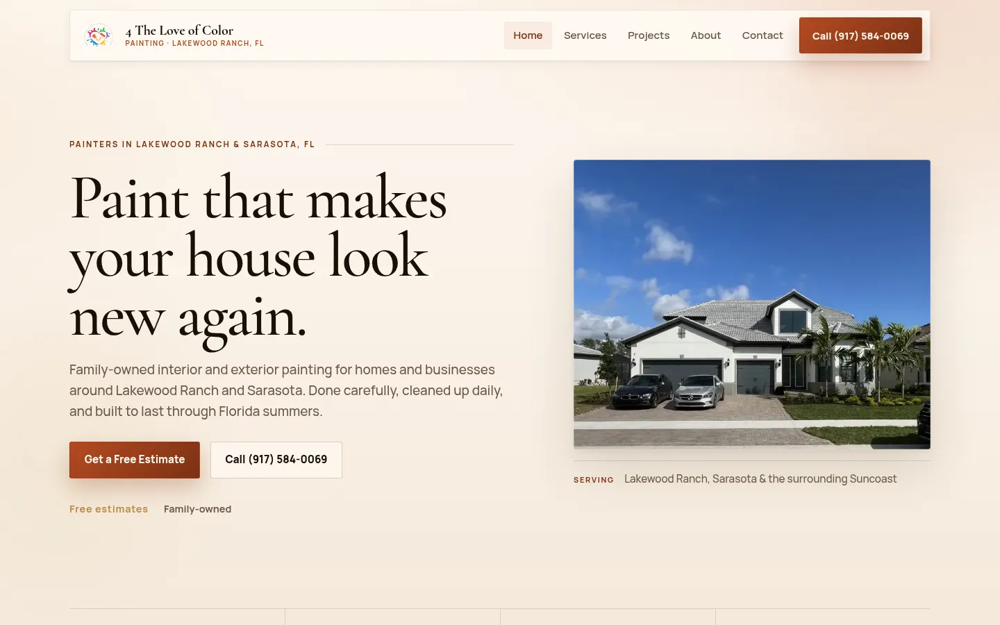

Case study · 2022–present · production
4 The Love of Color: website and CRM
Since May 2022 I've been the only developer for a family-owned painting company near Sarasota. Customers find them through the website. The office runs on the CRM.
RoleSole developer, operations systems lead
SinceMay 2022
SiteReact 18, TypeScript, Vite
CRMExpress API, TypeScript, SQL

What it needed
Show up in local search, get visitors to ask for an estimate, and keep customers, schedules and jobs organized without paying for big business software.
What I built
- The website is React 18, TypeScript and Vite. Pages are prerendered so they load fast and show up in local search. All the text lives in one typed file. It's hosted on Netlify.
- An internal admin CRM for customers, scheduling and jobs, backed by an Express/TypeScript API that also handles the contact form and Google reviews. There's also a SwiftUI iOS client for the business.
My role
All of it. I work out what the owners need, build the front and back end, deploy and host it, and fix what people report.